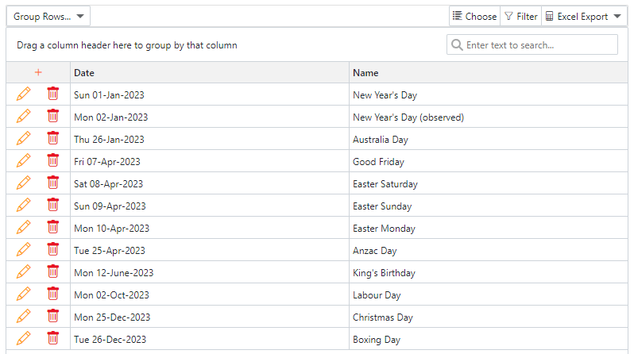
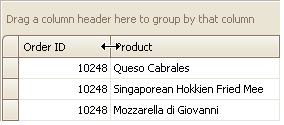
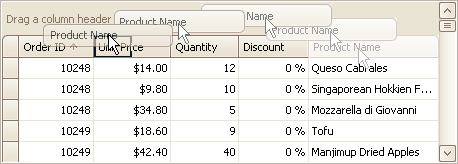
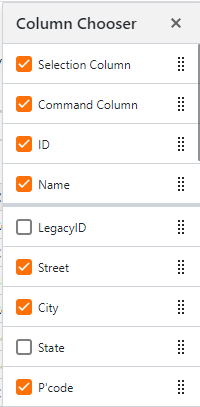
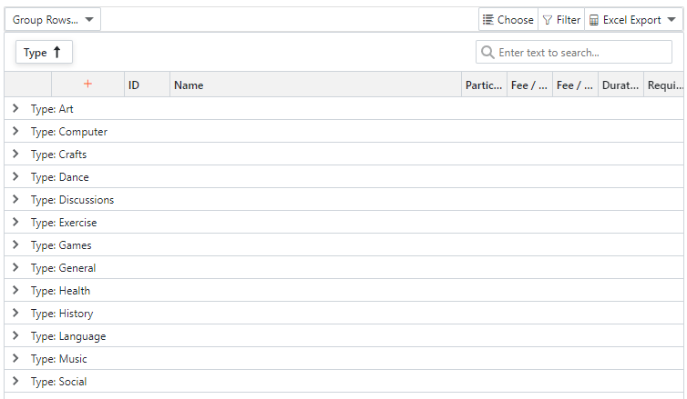
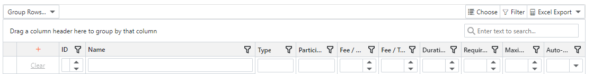
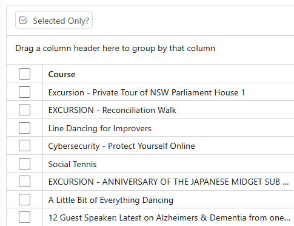

|
<< Click to Display Table of Contents >> Navigation: User Interface (UI) elements > UI Components > Grid |
The grid is the component used to display two-dimensional data...
•Records such as course, venues and participants are displayed as rows down the grid
•Fields such as name, address and phone numbers are displayed as columns across the grid. The header at the top of each column is known as the Column Header and is used to interact with the column.
Most often, a grid will have a Group and Search Panel, and a Toolbar associated with it...

The Public Holidays grid with its group and search panel and associated toolbar
The grid offers many powerful feature to assist in drilling down into the information your require...
Click a column header to sort by that column in descending order. Click again to sort in ascending order.
Use SHIFT-Click to sort by multiple columns, clicking each required column in the order of sort.
Use CTRL-Click to clear the column sort.
 |
To resize columns and bands, drag the right edge of the target column |
 |
To rearrange or reorder columns, use the mouse to drag the column into the desired position, or
Click Choose on the Toolbar. In the pop-up window, move the column headers using the drag bar on the right.
 |
On the toolbar, click Choose. In the pop-up window, tick or untick those columns you wish displayed or hidden. You may also re-order columns by clicking the drag-handle to the right of the field and dragging up or down. |
The Layout toolbar button may be displayed instead of the Choose button. Layout provides the ability the choose the columns to be displayed and to save that display for later use. The option consists of three buttons.
1.Choose Fields. This option will display the Column Chooser window as described above.
2.Save Layout. This button saves the chosen layout. All future grid displays will use the saved layout.
3.Reset Layout. This button resets the grid layout to its default. The saved layout will be deleted.
Note: The Layout button requires additional programming to implement. It is only found on some grids such as Add/Edit Participants
 |
To group data drag a column to the Group Panel above the column headers.
To un-group, drag the column from the Grouping Panel back to the column header bar.
Use the arrow marks to the left of the grouped row to expand/collapse the group detail. Use the Group Rows... toolbar menu options to expand/collapse all rows.
If the column you are grouping is a date, use the Group Rows... toolbar menu options to group by day, month or year.
Enter text into the search box within the group panle to find all occurrences of that text.
If multiple words are entered, the software will search for each word individually. To search for the combination of multiple words, enclose them in punctuation marks.
 |
Click the Filter button on the Toolbar to display the filter panel. Two types of filtering will be available...
Column Header Filter
Click the filter on any column header. This will display a filter pop-up showing all unique values within the column's rows. Select a data item by...
1.Tick the check box to the left of the column title to select that column, or
2.Use SHIFT-Click to select a range of values.
When selection is complete, click Apply.
Inline Filter Row
Use the row displayed immediately below the column headers, to filter by an explicit value. The form of entry will depend on the type of data being filtered. If text, enter the filter as text, if a date select the date from the list etc.
 |
If provided, rows can be selected by clicking the selection check box usually located as the left most column on the grid. Use the check box located on the column header to select/deselect all rows. A range of rows may be selected by using SHIFT-Click on the row.
A grid toolbar button, Selected Only? will be displayed when a grid has a selection column. It will display selected records only when clicked. If clicked again, all records will be displayed.
Click the Export button on the toolbar to export the grid to Microsoft Excel. If selection is available you may choose to export all rows or the selected rows. The export will preserve all filtering, column ordering, grouping and sorting.
The export will be downloaded as an Excel file and placed in the Downloads folder on your PC.